第33天：ELF32格式入门
第33天：ELF32格式入门
背景知识
什么是目标文件？
简单来说，目标文件（Object File） 是源代码经过编译后、链接前的一个“半成品”。
例如输入下面的命令：
gcc -c main.c
-c 的意思是：只编译，不链接。
所以，会生成一个叫 main.o 的文件，这个 .o 就是目标文件。
.o 文件包括机器码，但“地址未定”。虽然这些机器码是 CPU 能读懂的二进制指令，但它里面的函数和变量地址是相对的。
比如你在 main.c 里调用了 printf，目标文件知道这里要“跳到printf函数”，但它不知道 printf 的内存地址是多少。
不过 .o 也不完全都是机器码，还有相当一部分内容是给链接器看的，例如它会包含一个叫重定位表（Relocation Table）的部分，此概念在上节课已经介绍了。
.o 文件是 ELF 格式的一种。
什么是ELF 格式
ELF (Executable and Linkable Format) 是 Linux 环境下二进制文件的统一标准格式。
不管是 main.o（目标文件）、还是可以执行的 a.out，包括系统里的 .so（动态链接库），它们在底层都遵循同一种“排版方式”，也就是 ELF 格式。
ELF 的四大组成部分
-
ELF Header（文件头）
记录了这是 32 位还是 64 位、是大端还是小端、程序的入口地址（Entry point）在哪里等等。
-
Program Header Table（程序头表）：
这是给 操作系统 看的。举个例子：可执行文件利用这部分内容告诉操作系统：“运行我时，请把文件偏移 0x1000 处的内容加载到内存 0x08049000，并赋予只读权限。”
-
Sections（节/段）：
.text：对应我们之前生成的指令编码
.data：对应我们之前生成的数据段
.strtab：字符串表
.symtab：符号表
…（这里省略，马上会学习到） -
Section Header Table（节头表）：
这是给链接器和调试器看的“目录”。记录了每个段的名字、大小、在文件中的位置、属性等。
为什么会有ELF格式呢
在 ELF (1990年代初) 诞生之前，Unix 世界处于一种“格式战”的混乱状态（比如早期的 a.out 和后来的 COFF）。发明 ELF 格式主要为了解决以下三个“痛点”：
- 动态链接的“救星”
早期的 a.out 格式非常死板，很难实现高效的动态链接（Shared Libraries）。
痛点：旧格式要求每个动态库在内存中的地址必须是固定的。如果两个库地址冲突，程序就崩溃。
ELF 的创新：引入了 GOT (全局偏移表) 和 PLT (过程链接表)。这让代码可以写成“位置无关”的（PIC），无论动态库加载到内存哪个角落，程序都能通过查找 ELF 里的这张“表”找到函数。 - 跨平台的“通用语言”
以前每种硬件架构（Intel, Motorola, SPARC）都有自己的二进制格式。
痛点：开发者不得不为每种机器写一套链接器和加载器。
ELF 的创新：它被设计得极其通用且灵活。它用统一的 Header 描述所有信息。无论是在 32 位还是 64 位，或者在大端还是小端机器上，解析逻辑几乎是一样的。 - “链接”与“运行”的完美分离
痛点：旧格式把调试信息、符号名和机器码混在一起，操作系统加载时很头疼。
ELF 的创新：它定义了两套视角：链接视角和运行视角。
前者颗粒度很细，由.text、.data、.bss、.symtab、.rel.text等组成。
后者颗粒度很粗，当程序要跑起来时，操作系统根本不在乎可执行文件是由多少个 .o 拼成的，它关注的是加载地址和权限。可执行文件把属性相似的 section 揉成一个大的 Segment（通常是 LOAD 类型），内核加载器像“搬运工”一样，把这个大的 Segment 直接映射到内存。
编译器和编译系统
之前，我们把 csub 叫做编译器，其实它不仅仅是编译器。
编译器一般是把高级语言翻译成汇编代码。把汇编语言翻译成目标文件，是汇编器的任务；把多个目标文件和库文件链接在一起，生成最终的可执行文件，是链接器的任务。
编译系统是一个更广义的概念，涵盖从源代码到可执行程序所需的全部工具和流程。
所以，我们马上就要通关了！
还有两道关卡：
- 把汇编语言翻译成目标文件，目前做了一半，因为符号表和指令编码都完成了
- 把多个目标文件链接在一起，生成最终的可执行文件
所以，我们打起精神，完成冲刺！
下面，为大家具体介绍 ELF32 格式的每个部分。
ELF文件头
nasm -f elf32 test.asm
-f elf32 表示指定生成 elf32 格式的 .o
以上命令会生成 test.o
用下面的命令查看 .o
readelf -a test.o
首先输出的就是文件头
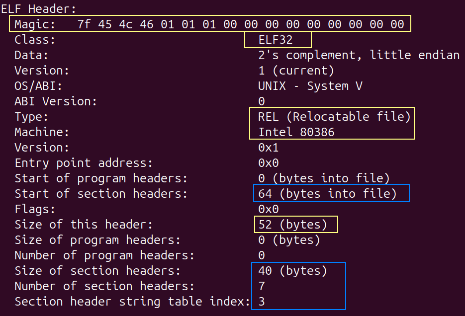
⬆文件头示意图
需要关注的我都框出来了。首先，是一串 16 字节的魔数。
| 含义 | 备注 | |
|---|---|---|
| 7f 45 4c 46 | magic | del(0x7f),‘E’,‘L’,‘F’ |
| 01 | 32位，ELFCLASS32 | 00 表示 ELFCLASSNONE，02 表示 ELFCLASS64 |
| 01 | 小端序 | ELFDATA2LSB |
| 01 | 版本 | EV_CURRENT |
| 00 00 00 00 00 00 00 00 00 |
偏移 0：7f 45 4c 46 对应 4 字节的 ASCII 码：del(0x7f),‘E’,‘L’,‘F’；
偏移 4：01，表示这是 32 位的文件；
偏移 5：01，表示小端格式;
偏移 6：表示版本，通常设为 01;
偏移 7~15：通常设为 0;
除了魔数，文件头还有其他字段。
下面就是文件头结构体的定义。
来自 Linux 的系统文件/usr/include/elf.h
1 | |
查看文件头的原始数据，可以用命令
hexdump -C -n 64 test.o
-n 64 表示查看前 64 个字节结果如下图：
1 | |
除了魔数，每个字段的含义我都列出来了。
“我们的取值”这列是说我们的汇编器需要生成 .o, 应该取什么值。
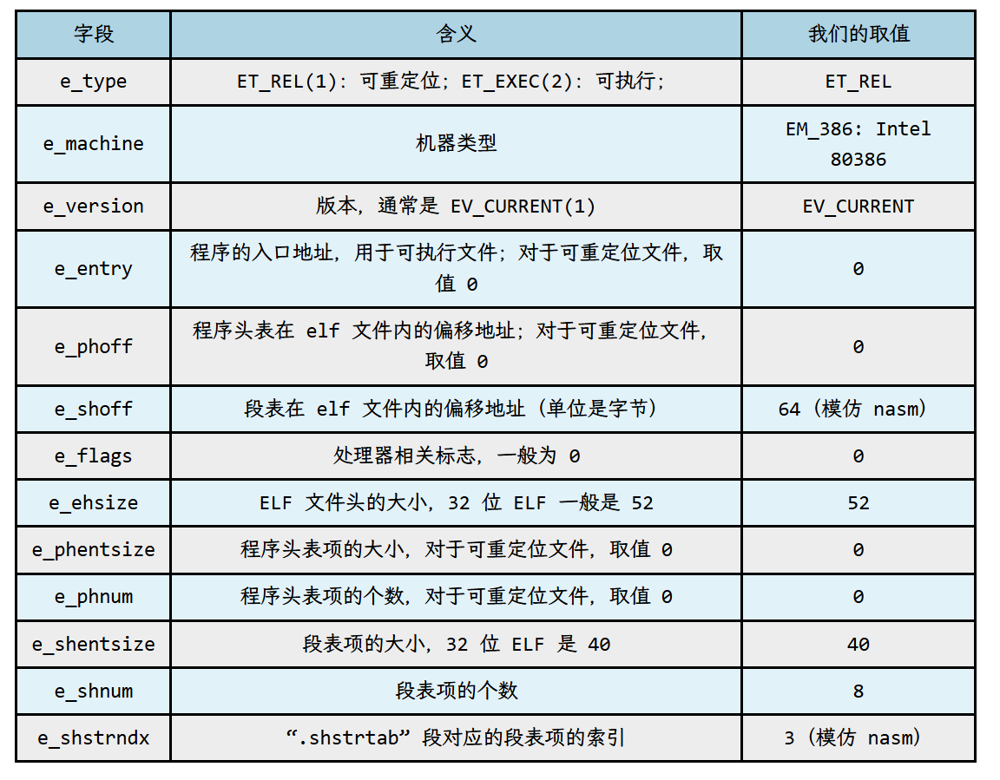
目标文件结构示意图
既然要生成 .o，不如研究一下 nasm 生成的 .o 是什么样的 ，我们依葫芦画瓢。
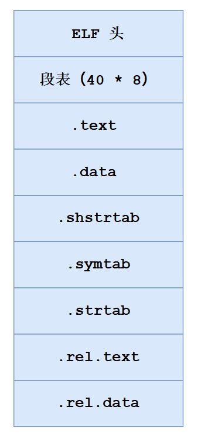
上图是某个 .o 文件的结构图。
首先是文件头，然后是段表，这个段表是什么呢？马上就讲。
段表后面是每个段。
注意，虽然叫“段”，但是英文是 section，节的意思。在讲链接器之前，我们可以把节叫做段，认为这二者是同一个概念。
相信读者对 .text 和 .data 段不会陌生，在上节课“合并同类项”这一节，有示意图。
然后是段表字符串表（.shstrtab）、符号表（.symtab）、字符串表（.strtab）；
最后是针对 .text 段的重定位表（.rel.text）和针对 .data 段的重定位表（.rel.data）；
虽然名字都带个“表”，但是它们也是 section;
因为上节课我们介绍了重定位表，所以，陌生的概念有 4 个，分别是
1、段表
2、段表字符串表(.shstrtab)
3、符号表(.symtab)
4、字符串表(.strtab)
下面我们就一一学习。
段表
段表（也叫节头表）由若干段表项组成，对于 ELF32，每个表项是 40 字节。
可以说段表就是段的目录，有几个段就有几个表项。
细心的读者一定发现，图中段表是 40 * 8，说明有 8 个，可是一共就 7 个段啊。
观察得很细，确实只有 7 个段，多出来的段表项是一个空的表项，它的 40 个字节全是 0；
文件头里面有一个字段叫 e_shoff，意思是段表在 elf 文件内的偏移地址（单位是字节）；
就是本文开头那张图片，我用蓝色框框住的“64”；
所以，要查看段表的原始数据，可以用命令
hexdump -C -s 64 test1_nasm.o -n 320 -v
-s 64 表示跳过前面 64 字节
-n 320 表示显示 320 个字节，因为 40 * 8=320，所以我们查看 320 字节就够了。
查看结果如下：
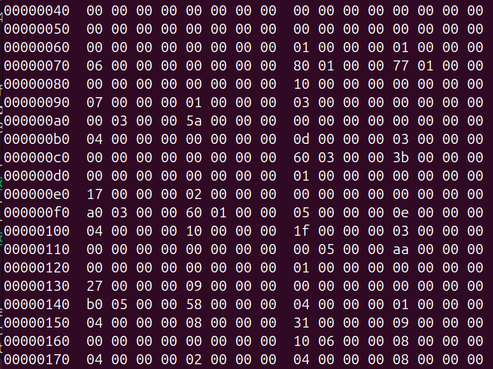
前 40 个字节，确实都是 0，这是一个空的段表项。
图中的数字都是什么意思呢？
需要弄清楚这 40 个字节都代表什么。
描述段表项的结构体叫 Elf32_Shdr；
定义如下
1 | |
注释有点简单，我总结了下面的表格。
| 字段 | 含义 | 备注 |
|---|---|---|
| sh_name | 是一个4字节的偏移量，记录了段名字符串在段表字符串表内的偏移。 | |
| sh_type | 段的类型。SHT_PROGBITS(1):程序数据；SHT_SYMTAB(2):符号表；SHT_STRTAB(3):字符串表 SHT_RELA(4):带加数的重定位表项；SHT_REL(9):不带加数的重定位表项；SHT_NOBITS(8):无内容段（例如.bss） | 不带加数的意思不是没有加数，加数（Addend）存放在“待修正的地址处”。即链接器在处理前，会先从目标代码的原始字节中读出这个值。 |
| sh_flags | 段属性。SHF_WRITE 表示可写；SHF_ALLOC 表示执行期间要占用内存；SHF_EXECINSTR 表示可执行 | 属性可以叠加，例如.text 段的属性是 SHF_ALLOC|SHF_EXECINSTR； .data和.bss段的属性是 SHF_ALLOC|SHF_WRITE;对于一般的段，如果执行期间需要分配内存则取值 SHF_ALLOC，如果不需要分配内存则取默认值 0 即可 |
| sh_addr | 段加载后的线性地址 | **对于可重定位目标文件，无法确定段的虚拟地址，故设置为 0；**对于可执行文件，链接器会计算出需要加载的段的线性地址。 |
| sh_offset | 段在文件内的偏移 | 根据此偏移可以确定段的位置，读取段的内容。 |
| sh_size | 段的大小，单位为字节。 | 如果段的类型是 SHT_NOBITS，表示段加载后占用内存的大小 |
| sh_link | 节链接索引 | 如果是符号表 (SYMTAB)，sh_link 指向与之关联的字符串表 (STRTAB) 的索引；如果是重定位表 (REL/RELA)：sh_link 指向关联的符号表索引 |
| sh_info | 对于符号表，记录符号表内最后一个局部符号的索引+1；对于重定位表，指向被修补的节的索引 | ELF 规定所有局部符号必须排在全局符号之前。链接器可以通过这个值快速区分哪些是局部符号，哪些是全局符号；即使你的代码里全都是全局变量，符号表中至少也存在一个索引为 0 的局部符号。 此时 sh_info 的值将为 1 |
| sh_addralign | 段的对齐，取值是2的整数幂(1，2，4，8，…),如果取值0或1，则表示无对齐的要求； | 在可重定位目标文件中，代码段和数据段的 sh_addralign 一般是 4，其他类型的段取值是 1（无对齐要求）；在可执行文件中，代码段的取值一般是 16，数据段一般是4，其他类型段取值是1（无对齐要求） |
| sh_entsize | 对于有表结构的段，表示表项的大小；对于不是表结构的段，取值 0 | 例如符号表的表项大小是 sizeof(Elf32_Sym) = 16 字节； 重定位表的表项大小是 sizeof(Elf32_Rel) = 8 字节； |
有读者会说，这么多字段，拿着原始数据一条一条对，岂不是很麻烦？
确实很麻烦！好在 readelf 命令会帮我们把“天书”翻译成适合人类阅读的文字。
readelf -a test.o
输出的内容很多，文件头后面就是段表了。
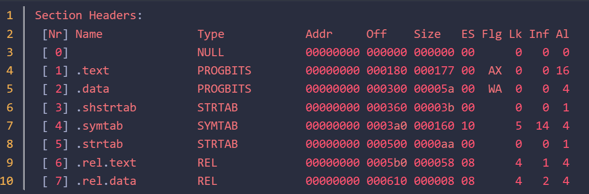
注意，Flg 字段，字母的含义是：
W (write), A (alloc), X (execute)
从 0 到 7，一共 8 个段表表项。
从 Name、Type、再到最后一列的 Al， 一共 10 个字段，都在这里了。
这 10 个字段对 .o 来说，也不是每个都会用到；
对于我们将要生成 .o，段表的每个字段怎么填呢？
我们可以模仿上面的表格。
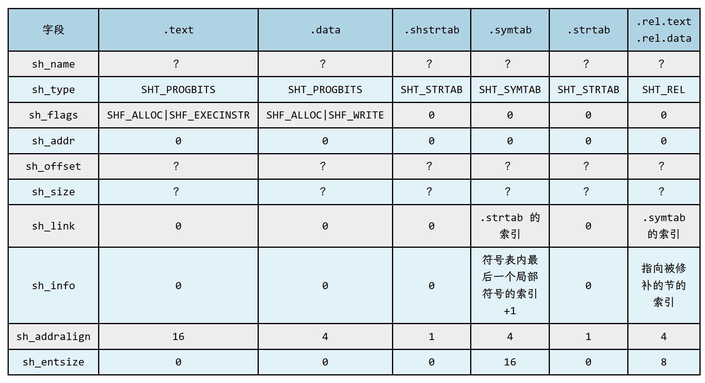
“？” 表示需要根据具体情况填。
段表字符串表
上图 sh_type 这一行，段表字符串表（.shstrtab）和字符串表（.strtab）的取值一样，都是 SHT_STRTAB，意思是它们都是字符串表。
什么是字符串表？字符串表（简称串表）虽然带个“表”，但是和表没有关系，就是一疙瘩字符串。
为什么需要字符串表？
段表和符号表都需要记录段的名字和符号的名字，这些名字就是字符串。然而，段表和符号表的表项都是固定长度的，无法存储不定长的字符串。所以，elf 文件把这些字符串集中在一起，放在一个段（section）里面，称为“字符串表”。
要表示一个名字，可以用这个名字在字符串表内的偏移。
现在，我们查看段表字符串表的原始数据。
如果不依赖 readelf 的输出信息，如何找到段表字符串表呢？
文件头示意图的最后一行，给出了 Section header string table index = 3；
翻译过来是节头字符串表，也叫段表字符串表，索引是 3， 说明它是段表第 3 个表项（从 0 开始数）
所以，我们先把段表第 3 个表项找出来。
段表在 elf 文件内的偏移是 64；再加上 0~2 个表项的大小，就是 64 + 40 * 3 = 184
跳过文件开头的 184 个字节，查看 40 个字节。
hexdump -C -s 184 test1_nasm.o -n 40
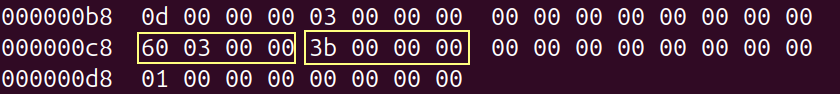
我们关注 sh_offset 和 sh_size 字段，就是用黄色框框出来的。
偏移是 0x0360，大小是 0x3b；
和前面用 readelf 命令得到信息一致；
然后把节头字符串表的数据打印出来；
hexdump -C -s 0x0360 test1_nasm.o -n 0x3b
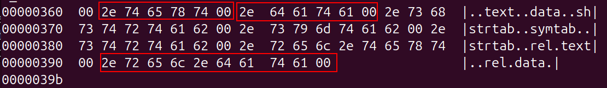
根据右边显示的字符，说明这确实是一大堆字符串。
“.text” 在其中的偏移是 1;
“.data” 在其中的偏移是 7;
“.rel.data” 在其中的偏移是 49;
所以，.text 段对应的段表项的 sh_name 的值是 1;
.data 段对应的段表项的 sh_name 的值是 7;
.rel.data 段对应的段表项的 sh_name 的值是 49(0x31);
如何验证呢？
段表在 elf 文件内的偏移是 64；再加上 1 个空表项的大小，就是 64 + 40 = 104;
hexdump -C -s 104 test1_nasm.o -n 40
查看第 1 个段表项
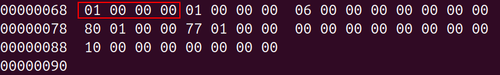
前 4 个字节是 1，就是 sh_name，说明第 1 个段表项是 .text 段的;
查看第 2 个段表项:
hexdump -C -s 144 test1_nasm.o -n 40
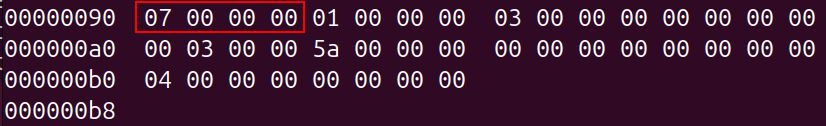
前 4 个字节是 7，说明第 2 个段表项是 .data 段的;
查看第 7 个段表项
hexdump -C -s 344 test1_nasm.o -n 40
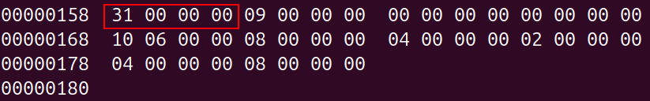
前 4 个字节是 0x31，说明第 7 个段表项是 .rel.data 段的;
符号表
符号表这个“表”当之无愧，它和段表一样，确实是表结构。
每个条目 16 字节。每个字段的含义如下：
1 | |
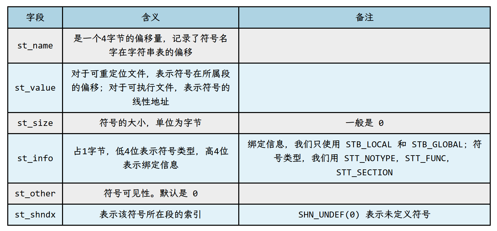
st_name 就不用说了，刚刚讲过；不同的是这个偏移量要去符号表中找。
st_value 就是我们前面反复提到的符号在段内的偏移。
st_size 给 0 就可以。
st_info，低 4 位表示符号类型，高 4 位表示绑定信息；具体给什么值，等讲代码的时候再说。
st_other，一般给 0；
st_shndx，表示该符号所在段的索引。
例如 .text 段定义了函数 foo，那么符号 foo 的 st_shndx 值就是 .text 段的索引；
.text 段的索引是多少？需要查看段表， .text 段的段表项是第几个条目，索引就是几；
有关的宏定义如下：
1 | |
字符串表
和段表字符串表的功能一样，只不过字符串表把符号表中所有符号的名字收集到一起了。不再赘述。
重定位表
重定位表这个“表”也是当之无愧，确实是表结构。
重定位表一般位于可重定位目标文件内，上节课已经带大家窥探了一番。
重定位表一般保存在名字以 “.rel” 开头的段内。该段的类型为 SHT_REL 或者 SHT_RELA（我们采用前者）。
可重定位目标文件中每个需要重定位的段，一般都对应一个重定位表。
例如代码段 .text 的重定位表在 .rel.text 段；数据段 .data 的重定位表在 .rel.data 段；
每个重定位表可以包含若干个表项，每个表项记录一条重定位信息，包括要重定位的符号，偏移，类型等信息。
重定位表项的数据结构如下（我们用的是不带加数的，2~6 行）
1 | |
相关的宏列举如下：
1 | |
| 字段 | 含义 | 备注 |
|---|---|---|
| r_offset | 要重定位的位置对于段基址的偏移 | 只考虑静态链接的情况 |
| r_info | 低8位标识重定位的类型；高24位表示要重定位的符号 |
重定位表项需要的信息包括符号、偏移和类型，这些我们已经在前面的章节中掌握了，所以生成重定位表很简单。
本文到这里就结束了。
如果暂时掌握不了这么多内容也没有关系，等后面写代码的时候再回来复习，肯定有不一样的收获。